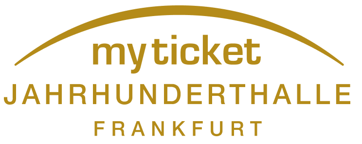

Cases
Marken, die ich aufgebaut, Engpässe, die ich gelöst habe.
Eine Auswahl der Projekte aus Vertrieb, Marke und Eventbranche. Manche laufen seit Jahren. Andere haben in Wochen den Engpass aufgelöst.

Jahrhunderthalle Frankfurt · seit 2017
Musiksneak Frankfurt — aus einem vergessenen Raum eine feste Marke.
Reaktivierung der historischen 60er-Jahre-Bar in der Jahrhunderthalle Frankfurt. Drei Bühnen, drei unbekannte Acts pro Abend, kein Line-up im Vorfeld — Vertrauen ins Booking als Format-DNA. Heute, fast acht Jahre später, eine feste Konzertgröße in Frankfurt.
Case lesenSofar Sounds Frankfurt · seit 2015
Aus dem Nichts wurde eine Bewegung.
2015 das globale Sofar-Sounds-Format nach Frankfurt geholt, drei Jahre aktiv aufgebaut, dann an ein neues Team übergeben. Die Reihe läuft seit zehn Jahren — und hat sogar Corona überlebt. Künstler:innen aus Israel, Mexiko, Brasilien, Italien und England waren bei uns zu Gast.
Case lesen
EVER Health · seit 2024
Erst das Fundament. Dann das Wachstum.
HubSpot-CRM, Lead-Strukturen, Monetarisierungslogik und Customer Success für eine B2B-HealthTech-Plattform aufgesetzt — innerhalb weniger Monate. Sauberes Fundament statt Skalierungs-Hacks. Inkl. Founding-Experts-Programm, Newsletter-Setup und ersten Messeauftritten.
Case lesen